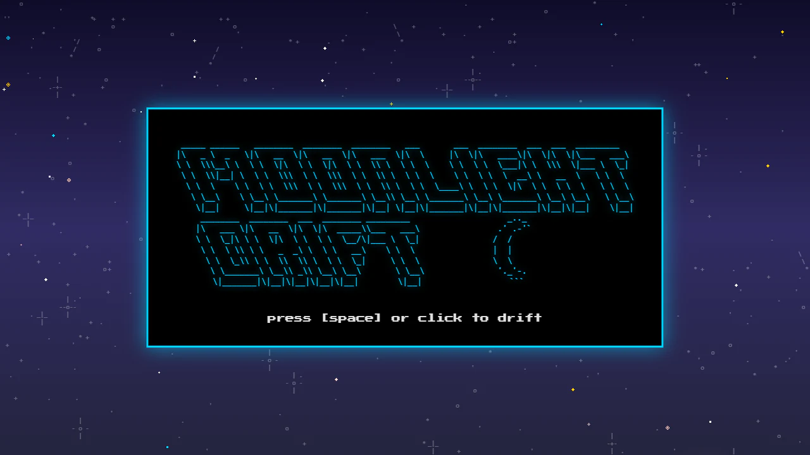
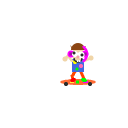
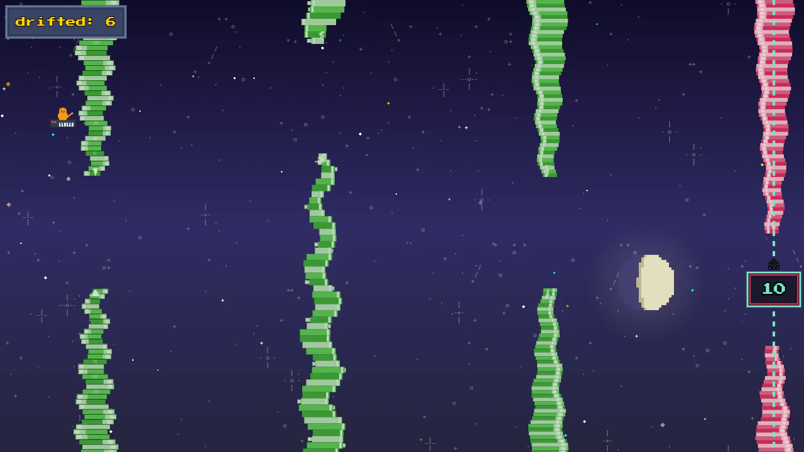
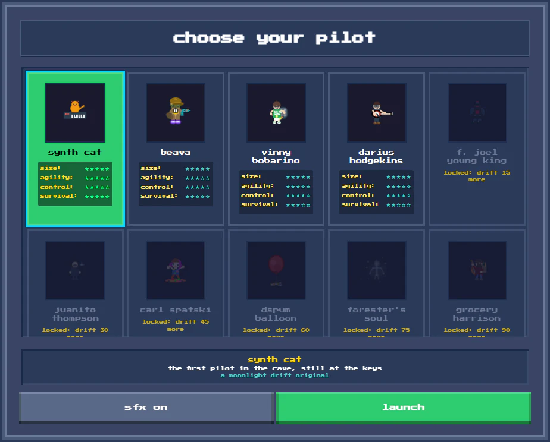

coast through space · dodge obstacles · ride the moonHold thrust to rise, let go to fall, and keep clear of the cave walls as they close in. Pick one of twenty pilots, each with their own handling, and see how far you can drift.
It descends from the Flash-era helicopter games, and it plays the same on every machine it runs on.


pipx install magmacrunch-moonlight-driftgame by magmacrunch media
music "Moonlight Drift" by C.P. Rutledge
original concept inspired by Simon Dorsey's Jetman (2007), itself after David McCandless's Flash game Helicopter (2002), and kin to Yohei Iwasaki's SFCave (1995)